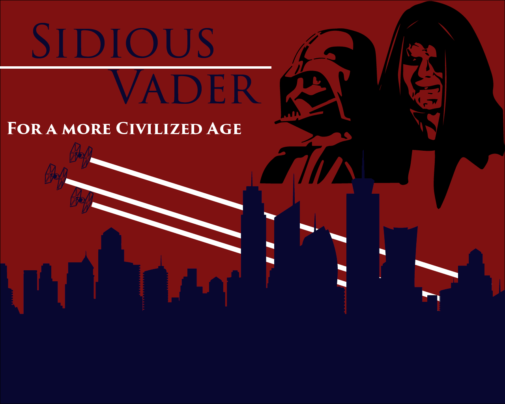

My project will be a satirical piece which criticizes our current political situation by creating relatable political material based on the fictional Galactic Empire from the popular Star Wars franchise. My intended audience will be young adults, the demographic which historically displays the most political fervor. My planned interaction will be a moving display at the top of the page which shows TIE fighters soaring across the sky, followed with a series of facts or quotes which appear as the galactic empire symbol until the user clicks on them, then the quotes would fade in. I am not sure if that will be the extent of my interactivity, I will continue to develop the idea as I progress.

This is a quick mockup of my design idea using some of the assets I will need.
Milestone 2 - Portal
The theme of my portal is a sleek modernist design, with a sleek, elegant coloring. Or originally, I considered doing a retro site, with an 80's theme. It would have had a predominantly black background with bright reds, blues, greens, and oranges. In the end, I couldn’t capture the real feeling of a retro website, without it looking poor. I couldn’t solve that design roadblock, so I went around it and created a new sleek design instead. I also had a lot of difficulty with making the page fade in. The fade works well in some browsers, while others may not work on the first run of the page. I didn’t use many resources in my portal, I used jQuery to make the page opacity increase then used it to fade in the page. One thing I really like about this is that I have this structure in my HTML that allows me to know how the CSS and JS will intersect with the page, I just change a couple of classes and my post will continue to be properly formatted. Next time, I will start with more sketching, since I spent a lot of time working on the retro design scheme, and if I had a firmer idea of what I wanted, I could better use my time.
Milestone 1 - Portal
The concept of my portal is a simple and easy gold, black, and white color combination. I wanted something more than a completly minamalist design, so I designed a line to zig zag down the page as more and more posts are created. The page is designed to be easy to understand, with only one axis of movement. It is made useing reactive design, so it will shrink to accomidate smaller screens, and grow to an extent for large devices. The design is modular, so that I can add pictures and display lab assignments easily with only a couple of classes.
My Portal is divided up into 3 sections, my labs, my projects, and my Journal enteries. To see any of my content, click on any tab and scroll down for a timeline of my work.
This is where I can include any photos for a post.